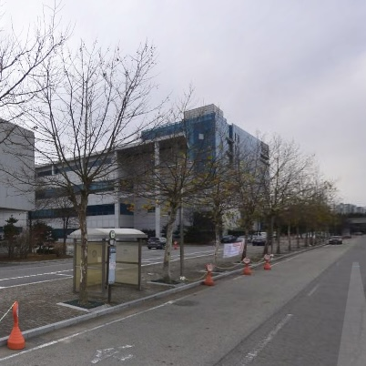
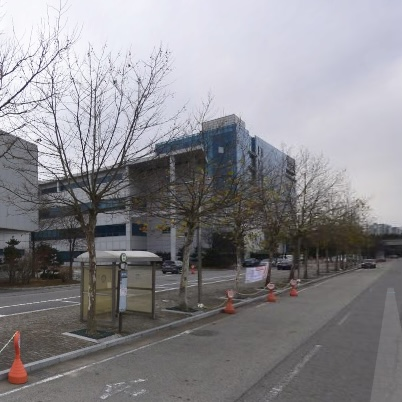
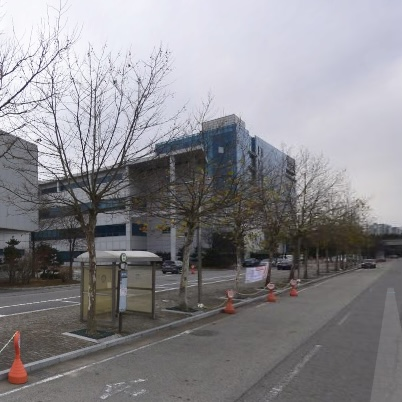

경기테크노파크
4차 산업혁명 선도 강소기업 발굴, 육성지역혁신거점 역할 강화를 통한 지역산업 생태계 조성, 사회적 가치 구현을 위한 혁신경영 체계 구축을 위해 건립되었다.
 


한국전기연구원(KERI)은 과학기술정보통신부 국가과학기술연구회 산하 정부출연연구기관으로, 우리나라에서 유일하게 전기를 전문적으로 연구하는 기관이다.
한국생산기술연구원 "융합기술연구소"는 융·복합 생산기술 개발·지원의 컨트롤 타워이다. 기술의 융·복합화를 통한 섬유, 로봇, 웰니스 등을 개발·실용화 하는데 중점을 두고 있으며, 융합 생산기술 개발 및 지원을 위한 조직을 운영하고 있다.
4차 산업혁명 선도 강소기업 발굴, 육성지역혁신거점 역할 강화를 통한 지역산업 생태계 조성, 사회적 가치 구현을 위한 혁신경영 체계 구축을 위해 건립되었다.

LG부품소재연구소
연구개발 성과물이 국내외 시장에서 요구하는 성능 및 안전요건에 충족하는지 여부를 객관적이고 정확하게 검증하여 국민안전 확보, 수출경쟁력 제고 및 국가 기간산업 발전에 이바지한다.
행정실 연락처:
031-400-4378 (동관-여)
031-400-4379 (서관-남)
학기중
08:30 ~17:30
방학중 10:00 ~ 17:00
(점심시간 12:00 ~ 13:00)
기숙사식당메뉴확인
행정실 연락처:
031-400-4380
학기중 08:30
~17:30
방학중 10:00 ~ 17:00
(점심시간 12:00 ~ 13:00)
행정실 연락처:
031-8032-9293
학기중 08:30
~17:30
방학중 10:00 ~ 17:00
(점심시간 12:00 ~ 13:00)
총장팀, 교무처, 재무팀, 학사팀, 미디어전략센터가 위치해 있다. 한양대의 상징인 사자상이 앞에 있으며 크리스마스나 졸업날과 같은 기념일에 컨셉에 맞추어 예쁘게 변신하므로 앞에서 사진을 찍기 좋다.

학생식당, 보건소, 서점, 카페, 편의점, 우체국, 여러 음식점 등
다양한 편의시설이 있으며 4~5층에는 동아리방과 소극장이, 3층에는
교직원식당과 휴게실 카페가 위치해 있다. 프라임 라운지와 글로벌
라운지가 마련되어 있어 인쇄나 PC, 팀플 활동을 할 수 있다.
학생식당메뉴확인
교직원식당메뉴확인

학생지원팀, 한양보건센터, 학생상담센터, 학생회관, 학생지원팀, 인권센터, 총학생회, 학생복지위원회가 위치해 있다. 학생증을 발급하러 가거나 그 외 학부생과 관련된 업무를 처리한다.
건축과 관련된 실험실들이 모여 있어 건축학과나 교통물류학과 학부생들이 주로 사용하는 건물이다. 자습을 할 수 있는 해동학술정보실이 있다.
주로 제2공학관과 관련된 건축 및 토목 구조물에 대한 연구를 진행하는 곳이다.
친환경건축기술연구소가 3층에 위치해 있다. 건축물을 건설했을 때 외부에서 발생하는 강부이나 빌딩풍의 변화를 파악하고 안전성을 평가한다.
디자인대학 학부생들이 주로 사용하는 건물이다. 실습이나 작품을 만들기 위한 패션디자인실과 사진촬영실, 교수휴게실이 있다.
디자인대학 학부생들이 주로 사용하는 건물로 강의실이 많다. 영상디자인스튜디오가 2층에 마련되어 있다. 정문에서도, 기숙사에서도 꽤나 먼 곳에 위치해 있다.
디자인대학 RC 행정팀이 있다. 교수 연구실, 산업디자인학과 4실, 실내환경디자인연구실, 드로잉실, 세미나실, 애니메이션제작실 등이 위치해 있다.
경상대학 RC 행정팀이 위치해 있으며, 경상대학 학부생들이 주로 사용한다. 국제문화관과 대칭을 이루는 쌍둥이 건물이며 경상관 1층에는 공부를 하는 카페 몽랩, 쉼터, ‘도담’ 도서관, 팀플실 등이 있다. ‘꿈틀’이라는 미끄럼틀이 있어 2층에서 1층까지 재미있게 내려갈 수 있다.
국제문화대학 RC 행정팀이 위치해 있다. 경상관과 대칭을 이루는 쌍둥이 건물이다. 2층에는 아카이브 자료실과 1인 미디어 스튜디오가 있으며 팀플과 자습을 위한 공간인 ‘꿈의 둥지’가 있다.
ROTC 교육을 받는 곳이다. 1층에는 관재팀, 검수, 경인쇄실이 있고 2층에는 강의실, 3~4층에는 학군단이 위치해 있다.
언론정보대학 RC 행정팀이 위치해 있다. 학부생들이 영상을 촬영하고 편집할 수 있는 MCN 스튜디오가 있다. 광고홍보학부과 관련된 도서와 자료를 열람할 수 있는 도서관, ‘광홍상열지사’가 위치해 있다. 팀 프로젝트나 자습을 할 수 있는 IC-PBL실이 있다.
과학기술대학 소속 학과가 주로 사용하는 건물이다. 교수연구실과 광분석, 나노물질, 광전자, 지질해양학과 같은 각종 실험실이 있다. IC-PBL 세미나실이 위치해 있다.
학교의 주요 행사와 대형 초청 강의가 주로 열리는 건물이다. 중강당, 팀 프로젝트나 자습을 할 수 있는 IC-PBL실이 위치해 있다.


과학기술융합대학 RC 행정팀이 위치해있다. 주로 물리와 화학 실험수업을 듣는 공학대학, 과학기술대학 학부생들이 사용한다. 셔틀버스 정류장인 셔틀곡과 가장 가까운 건물이다. 1층에는 개인 공부를 하거나 학부생들이 자유롭게 이야기 할 수 있는 공간이 마련되어 있다.

주로 영어 관련 수업을 듣는 곳으로 영어회화실이 위치해 있다. 한양대 에리카 캠퍼스에서 가장 오래된 건물 중 하나이다.

대형 초청 강의와 학교의 주요 행사를 진행하는 건물이다. 1층이 지하에 위치해 있으며 다른 건물보다 비교적 추운 편이다.
공학대학에서 사용하는 5층 규모의 강의동이다. 해동학술정보실(Open Space), 공학대학 공용 캡스톤디자인실이 있으며 3, 4층에서 제3공학관과 구름다리로 연결되어 있다.
제1공학관과 구름다리로 연결되어 있는 제3공학관이다. 지하에 공대학생회실, 편의점이 있고, 2층에 공학대학 행정팀이 있다. 3층 이상에선 제4공학관과 연결되어 있다.
제3공학관과 연결되어 있는 제4공학관이다. 대규모의 PC실이 위치한다.
지하에 Knowledge Bunker 라운지가 있고, 공학대학 교수연구실이 많다.
정문쪽에 위치한 셔틀버스승강장이다. 셔틀콕이란 이름은 셔틀과 콜라의 합성어로 콜라 한 잔의 여유와 함께 셔틀버스를 기다리는 곳이라는 의미이다.
ERICA 컨벤션센터라고도 불리며 연구실 직원이나 대학원생들이 주로 사용하는 숙소다.
약학대학에서 사용하는 건물이다. 2층에 약학대학 행정실이 있다.
소프트웨어융합대학에서 사용하는 건물이다. 5층에 소프트웨어융합대학 행정팀과 Thinking Cubes가 있다.

산학연협력관이다.
행사에 주로 사용되는 건물이다.
ERICA의 도서관이다. 열람실, 그룹스터디룸, 북카페, 자료실과 커리어개발센터가 있다.
예체능대학에서 사용하는 체육관이다. 헬스장과 예체능대학 행정팀이 있다.

실용음악학과에서 사용하는 실용음악관이다. 개인연습실이 있다.
사회교육원에서 사용하는 골프연습장이다. 교양 골프 수업을 진행한다.
교양 테니스 수업이 진행되는 테니스장이다. 외부인들도 이용한다.